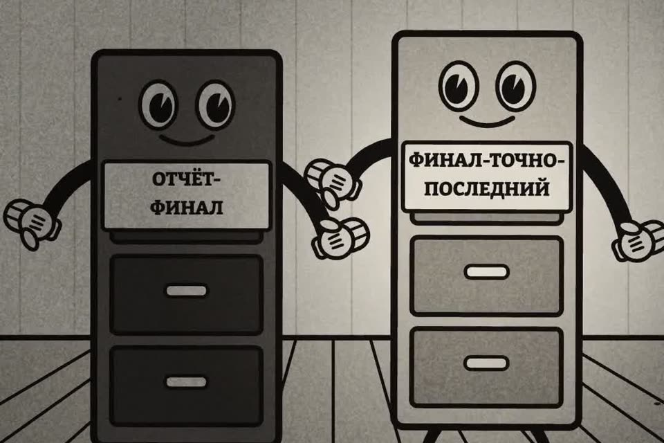

Проверь письмо до отправки
В ролике начальник получил «отчёт-финал» с пометкой «шеф всё равно не дочитает». Ниже промпт: нейросеть пройдёт по письму и вложению вместо вас. И четыре проверки на минуту.
- бесплатно
- Claude, ChatGPT, любой чат
- 1 минута до «Отправить»
К ролику «Клод, я отправил начальнику отчёт» · обновлено 27 октября 2026

Нужны текст письма и файл, который отправляете. Если в файле чужие персональные данные или коммерческая тайна, сначала решите, можно ли его показывать нейросети.
Первый результат за 3 шага
Отдайте письмо и вложение промпту
Нейросеть ищет всё, за что вам будет неловко, и не хвалит «в целом».
Вставьте в Claude, ChatGPT или любой другой чат текст письма и приложите файл, который отправляете (или вставьте его текст). Заполните квадратные скобки.
Проверь письмо перед отправкой. Ищи всё, за что мне будет неловко,
ничего не хвали «в целом».
Кому: [адреса и кто эти люди: начальник, клиент, весь отдел]
Копия и скрытая копия: [адреса]
Тема: [...]
Текст письма: [...]
Вложения: [имена файлов как есть] (файлы прикладываю / текст ниже)
Что я хочу отправить: [какой документ и какая версия должны уйти]
Пройди по пунктам и по каждому дай вердикт «ок / риск / стоп»:
1. Вложение: совпадает ли содержимое с тем, что я хочу отправить
и о чём говорит письмо. Нет ли признаков черновика или старой версии.
2. Имя файла: что оно говорит получателю, предложи нормальное имя.
3. Скрытое и лишнее в файле: пометки для себя, примечания, комментарии,
правки, заметки, текст «не для всех», внутренние оценки людей и клиентов.
Процитируй каждое место дословно.
4. Получатели: кому из них нельзя видеть что-то из письма или вложения.
5. Текст письма: обещания, цифры и даты, которые расходятся с вложением.
В конце: «можно отправлять» или список того, что исправить до отправки.
Если файл не открылся или ты видишь только часть, так и скажи.Тот же промпт отдельным файлом: prompts/pismo.md.
По пяти пунктам вердикт «ок / риск / стоп», скрытые места процитированы дословно, предложено нормальное имя файла. В конце «можно отправлять» или список того, что исправить. Если файл не открылся, чат должен сказать об этом прямо.
Проверьте сами то, чего чат не видит
Скрытые листы Excel и свойства файла чат может и не прочитать.
Откройте вложение из письма и пройдите по скрытым пометкам: примечания и правки в Word, скрытые листы в Excel, заметки докладчика в PowerPoint, свойства файла. Кому что можно читать, решаете вы: пробегите поле «Кому» и копию по проверке получателей.
В файле нет примечаний, правок и скрытого, имя файла говорит, что это, для кого и дата, в получателях только те, кому письмо предназначено.
Включите задержку отправки
Это единственный «отзыв», который работает всегда.
В Gmail «Отменить отправку» до 30 секунд в настройках, в Outlook правило отложенной доставки на 1–2 минуты.
После «Отправить» у вас есть от 30 секунд до пары минут, чтобы передумать.
Четыре проверки руками
На минуту перед кнопкой. Промпт делает то же, но не видит того, чего вы ему не дали.
Вложение: тот ли файлприкрепляется часто соседний
- Откройте вложение из письма, а не из папки. Прикрепляется часто соседний файл с похожим именем.
- Проверьте дату и последнюю правку: та ли это версия, которую вы правили вчера вечером.
- Если вложений несколько, убедитесь, что вы не прикрепили лишнего: черновик, старую версию, файл для другого клиента.
Имя файлаполучатель его видит
- Получатель видит имя. «отчёт-финал-точно-последний-v3» говорит, что версий было много, а «для_шефа_правки» говорит лишнее.
- Нормальное имя: что это, для кого и дата. Например,
Отчёт_продажи_сентябрь_2026.pdf. - Если файл не надо править, отправляйте PDF: в нём не видно истории правок и примечаний.
Получатели«Кому», копия, «Ответить всем»
- Прочитайте поле «Кому» глазами. Автоподстановка любит подставить однофамильца или общий адрес отдела.
- «Ответить всем» в длинной переписке: в копии может оказаться клиент или тот, о ком письмо.
- Внешним людям списком, которые не знакомы между собой, ставьте адреса в «Скрытую копию», а не в «Копию».
- Заведите задержку отправки (шаг 3).
Что было в ролике
Начальник получил «отчёт-финал» с пометкой «шеф всё равно не дочитает», а отозвать письмо было уже нельзя. Отчёт, пометки и Горо вымышленные. Ошибка настоящая: два файла с похожими именами, отправлен не тот, в нём остались черновые заметки, а «отозвать» вернуло письмо только у тех, кто его ещё не открыл.
Если застряли
Чат пишет, что файл не открылся или видна только часть
Вставьте текст файла прямо в сообщение, промпт это допускает («текст ниже»). Скрытое в файле тогда проверьте сами по списку пометок.
Письмо уже ушло
Отзыв в Outlook сработает только внутри вашей организации и только у тех, кто письмо ещё не открыл. В Gmail после 5–30 секунд «Отменить отправку» письмо ушло насовсем. На будущее включите задержку отправки (шаг 3).
Чего промпт не сделает
- Не видит того, чего вы не дали. Скрытые листы Excel и свойства файла чат может и не прочитать: проверьте их сами (скрытые пометки).
- Не знает ваших людей. Кому что можно читать, решаете вы.
- Не отправит и не отзовёт письмо за вас. Задержка отправки из шага 3 полезнее любого промпта.